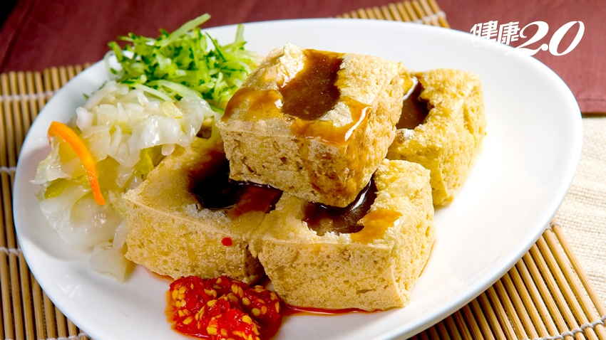

牛肉麵

牛肉麵是台灣獨創一格的代表性美食，長久以來，不僅深植台灣飲食文化，成為廣大民眾日常享用的國民美食；更以其獨特風味享譽國際、深受各國觀光客喜愛，知名度與日本的拉麵並駕齊驅。
牛肉麵的色香味
1 顏色：清燉濃醇無浮油，紅燒有適當添加的醬油和辣豆瓣熬煮出來的豐盈色澤。
2 香氣：濃醇鮮香，沒有羶雜味道，聞得出牛肉獨有芬芳。
3 味道：熟爛適中，沒有羶騷味，紅燒口味吃得到適當添加的調味料，如薑、蔥、蒜、紅辣椒和牛肉爆炒及燒燉之後，散發的滋味。
肉麵湯 1 牛肉：牛肉麵的領銜主角，選材以本地黃牛肉為首選，有嚼勁和口感的肋條與半筋半肉都是上選部位，不會太肥膩，也不致於太乾柴。 2 湯頭：好的紅燒牛肉高湯，融入豆瓣醬香，喝來濃醇夠味，各種辛香料和醬油、調料在湯汁中呈現一種柔和的平衡，沒有奪人誇張的大料香，搶了牛肉風彩，鹹淡調味恰到好處，夠味但不死鹹。有些店家為了節省成本和工序，用廉價醬油和甜麵醬烹煮湯頭，看來雖然醬色濃郁，味道吃來卻是酸的，沒有紅燒該有的香氣。 清燉湯頭首重鮮純，湯色看來清澈，喝到嘴巴裡卻是醇而不膩，喝完舌尖泛起自然回甘，不是加了甘草、人工甘味劑或牛肉精粉那種假兮兮的甘甜。 3 麵條：品賞一碗牛肉麵三要素之一，無論用的是陽春麵、手撖家常麵、手工刀切麵、刀削麵、還是細扁麵條，牛肉麵吃來都該有一定的彈性，不死硬，也不爛糊，煮到剛熟的硬麵條，泡在熱湯裡，還會慢慢吸收湯汁，讓麵條呈現多樣的口感層次。此外，麵條中要能吃出麵粉香，這一點很重要，有些麵條為求彈牙，加了太白粉，雖然吃來滑溜又有Q勁，但完全沒有麵香，並不可取。 牛肉麵做法 牛腩條或牛腱心切塊汆燙洗淨，以油炒香薑片、豆瓣醬、甜麵醬後放入牛肉塊一起炒，再下醬油膏炒勻後放入香料包、水及米酒，放入切半的洋蔥、整顆蕃茄及大塊蘿蔔，一起滷30分鐘後熄火浸泡一晚。 隔天去除洋蔥、蕃茄、蘿蔔，重新加熱紅燒牛肉，即可呈現濃稠油亮的感覺。 以滾水加入牛晶粉兌出牛肉清湯，放入麵碗中約至5分滿。 放入煮好的麵條與青菜，然後淋上紅燒原湯，放上牛肉、撒上蔥花即可。 另外吃牛肉麵，酸菜是一定要的配角。沒有酸菜的牛肉麵，猶如化好妝，忘了擦上口紅，頓時少了那麼點化龍點睛的效果。正因為酸菜是牛肉麵的好伴侶，酸菜炒得好壞和添加時刻攸關著吃麵口感。 牛肉麵的由來 台灣早期的農業社會有不食牛肉的習俗，有俚諺「毋食牛犬，功名袂顯；食了牛犬，地獄難免」（M̄ tsia̍h gû khián, kong-bîng bē hián; tsia̍h liáu gû khián, tē-ga̍k lân-bián.）之說法[註 1]，因此牛肉麵的歷史並不長，在二戰後早期台灣社會還視吃牛肉為禁忌，直到今天，仍有很多人不吃牛肉。 臺灣最早出現的牛肉麵以紅燒為主，是受成都川菜「小碗紅湯牛肉」啟發所創新演化而成。該道菜色使用豆瓣醬，口味與高雄岡山的豆瓣醬相似，以蠶豆瓣和辣椒製成。岡山為空軍眷村所在地，而四川正好是空軍在抗戰期間的據點。根據飲食史名家逯耀東教授所考證，台灣所謂「川味牛肉麵」實為台灣起源，為老兵想念家鄉四川口味製作，至於以四川為名，可能是創造者籍貫四川，而非四川原有的料理[1]。 台灣牛肉麵融合四川的豆瓣醬、上海本幫菜的紅燒、粵菜的高湯、粵東閩南的酸菜，某些口味包含四川的麻辣、台菜的紅蔥頭、南洋的沙茶等諸多元素，因此臺灣牛肉麵並非某一菜系的延伸，而是多重菜系、口味的混合。魔戒首部曲：魔戒現身
《魔戒》是托爾金創作的史詩奇幻小說，故事從霍比特人佛羅多繼承了一枚神秘戒指開始。這枚戒指是由邪惡的魔王索倫所打造，具有強大的魔力。
在甘道夫的指引下，佛羅多必須展開一段危險的旅程，將魔戒摧毀。這是一個關於善與惡之間永恆鬥爭的傳奇故事，充滿了冒險、友情與犧牲。